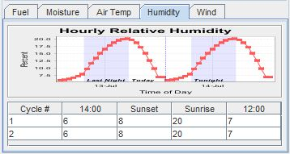

Following is an overview of the CPS v1.0 software. this version contains the following features:
Figure 1. Example demonstrating the alignment of forces concept.
Figure 1 shows an overview of the CPS software. On the left are a series of panels used for controlling and depicting the fire behavior inputs. In the center is a map and terrain viewer. On the right are the fire behavior outputs.
The Map Viewer is a 3D tool for selecting and viewing the location used for fire behavior calculations. Terrain can viewed from any perspective and on a variety of maps. The location of crosshairs at the center of the map viewer are used to obtain the terrain's slope and aspect, as well a the defining the latitude used to determine solar preheating of the fuel.
Figure 2. Map Viewer Crosshairs
The Map Viewer contains a set of crosshairs at the center of the viewer. The location of these crosshairs are used for the slope and aspect within the fie behavior calculations. Any change in location will be reflected immediately in the Map Location panel and the fire behavior panels.
Several buttons are displayed in the lower-left corner of the viewer which are used for controlling the view angles, panning and zooming.
The Map Location panel shows the location of the crosshairs within the map viewer.
Figure 3. Map Location panel showing location of
crosshairs.
Note that the accuracy of the slope and aspect increases as you zoom in on the terrain.
The Map Layers panel allows control of the maps, imagery, and controls and annotations displayed in the map viewer.
Figure 4. Map Layers
The Map Layers panel controls which layers are visible. The layers are displayed in a tree, which may need to be expanded by clicking on handle next to the name.
Simply check or uncheck the various layers to change the display within the map Viewer.
One of the fundamental principles of the Campbell Prediction System method is that firefighters should recognize how the three primary forces of wind, slope and preheat control fire behavior. When these three forces are in "alignment", fire behavior is at its worst.
The CPS Dashboard allows these three forces to be displayed together so as to see their alignment.
Figure 5. Dashboard with controls arrayed to show Alignment of Forces.
Figure 5 shows the CPS Dashboard configured to show the direction and strength for each of three primary forces. Fire behavior is greatest when the directional arrows are all pointing in a similar direction.
Several control panels are used to establish the fire's environment. These controls are all dynamically coupled to the fire behavior outputs. Any change to the environment will be reflected immediately in the fire behavior displays.
Figure 6. Solar heating and date and time controls.
Solar preheating is controlled by date, time and location. This panel allows you to control the date and time. The location is controlled by the map viewer.
The direction of the solar rays is shown within the yellow compass rose.
Figure 7. Fuel tab showing the selected fuel model with a fuel loading
graph
The Fuel tab contains a control for selecting a fuel model. A graph of the fuel loading is shown for the selected model. Clicking the [?] icon will display a help guide with photos for the selected model.
Figure 8. Moisture tab showing a selected fuel moisture scenario
The Moisture tab allows you to select the initial fuel moistures used in the fire behavior calculations. Note that the 1hr dead fuel moisture will be adjusted by hourly air temperature, humidity and solar heating.
Figure 9. Air Temp tab showing air temperature cycle and
editable table.
The Air Temp tab allows you to establish the yesterday's actual temperatures and today's forecasted temperatures. The table is used to set the parameters for the hourly temperature curves displayed in the chart.
These values affect the dead 1 hour and cured herbaceous fuel moistures.

Figure 10. Humidity tab showing relative humidity cycle and
editable table.
The Humidity tab allows you to establish the yesterday's actual relative humidity and today's forecasted relative humidity. The table is editable and it is used to set the parameters for the hourly temperature curves displayed in the chart.
These values affect the dead 1 hour and cured herbaceous fuel moistures.
Figure 11. Wind tab showing general wind speed and
direction with slider controls
The Wind tab lets you control the general winds used throughout the fire behavior calculations. The sliders allow you to control the wind speed and the wind direction.
When experimenting with the effects of wind, you may note that the wind speed also has a cooling effect on the fuel.
Figure 12. Map Crosshairs panel showing current location and
terrain.
The Map Location panel shows the location of the map viewer's crosshairs. This location affects the terrain and aspect, the sunrise and sunset times, and solar preheating.
The fire behavior panels display various outputs from the Rothermel fire spread equations. All of the fire behavior panels are dynamic. That is, any change in time, location, wind, fuel model, moisture, air temperature or humidity will be reflected immediately in the following panels.
Figure 13. Fire Spread
This dynamic panel shows the direction of maximum spread and the flame length. Wind is often a dominating force, but note that when the wind speed is low that the terrain aspect and slope become a greater influence.
Experiment with various wind directions and speeds on different terrain aspects and slopes to better understand this relationship.
Figure 14. Fuel Temperatures
This dynamic panel shows the computed fuel temperature and air temperature at the current location. This chart reflects the solar preheating of fuel and responds to changes in location.
A precept of the Campbell Prediction System method is that firefighters should recognize when fuel is, or will be, at its peak temperature. Experiment with changes in the terrain aspect to see when the hours of peak fuel temperature occur.
Figure 15. Haul Chart
The Hauling Chart is recognizable fire behavior diagram in wildland firefighting. The Haul Chart was so named because it infers the relative intensity of the fire behavior through graphical representations of firefighters working—haul firefighters, equipment working—haul equipment, trees torching—haul retardant, and crown fire—haul everybody to safety. Since fireline intensity and flame length are directly proportional (Byram, 1959)—the larger one gets the larger the other gets—and since we can visually assess the flame length the Haul Chart is an excellent tool for measuring the safety and effectiveness of various fireline resources.
The fireline interpretations of the Haul Chart are as follows: Figure 15. Haul Chart Interpretations (from Fireline Handbook, Appendix B.)
| FLAME LENGTH (Feet) | FIRELINE INTENSITY (BTU/Ft/Sec | INTERPRETATIONS |
|---|---|---|
| 0-4 | 0-100 | Persons using handtools can generally attack fires at the head or flanks. Handline should hold the fire. |
| 4-8 | 100-500 | Fires are too intense for direct attack on the head by persons using handtools. Handline can not be relied on to hold fire. Equipment such as dozers, engines, and retardant aircraft can be effective. |
| 8-11 | 500-1,000 | Fires may present serious control problems such as torching, crowning, and spotting. Control efforts at the head of the fire will probably be ineffective. |
| 11+ | 1000+ | Crowning, spotting, and major runs are common, control efforts at the head of the fire are ineffective. |
| ADJECTIVE RATING | FLAME LENGTH | IMPLICATION |
|---|---|---|
| LOW | 0-1 | Fire will burn and will spread however it presents very little resistance to control and direct attack with firefighters is possible |
| MODERATE | 1-3 | Fire spreads rapidly presenting moderate resistance to control but can be countered with direct attack by firefighters |
| ACTIVE | 3-7 | Fire spreads very rapidly presenting substantial resistance to control. Direct attack with firefighters must be supplemented with equipment and/or air support. |
| VERY ACTIVE | 7-15 | Fire spreads very rapidly presenting extreme resistance to control. Indirect attack may be effective. Safety of firefighters in the area becomes a concern. |
| EXTREME | >15 | Fire spreads very rapidly presenting extreme resistance to control. Any form of attack will probably not be effective. Safety of firefighters in the area is of critical concern. |
Selecting the appropriate fuel model is an important aspect for computing fire behavior. Portions of the GTR-INT-122 - Aids to Determining Fuel Models For Estimating Fire Behavior and RMRS GTR-153 - Standard Fire Behavior Fuel Models have been included to assist in this task.
Figure 16. Fuel Model help.
The guides for fuel models can be browed in the help system. Also, help for a specific fuel model can be obtained from the help button on the Fuel tab.
The CPS software supports an auto-update feature. This feature ensures you have the latest software modules and plugins installed. The updates are delivered via the Web.
Figure 17. Auto-update screen.
The auto-update feature can be accessed via the Check for Updates item in menu system